╔════ ≪ •❈• ≫ ════╗ Naruto New Legends ╚════ ≪ •❈• ≫ ════╝
Catalogo de compra
como comprar?
Para comprar, basta preencher a ficha abaixo e enviar no grupo da loja marcando O ADM .
ficha de compra abaixo
📋 Ficha de Compra
Copiado com sucesso!
𝑳𝒐𝒋𝒂 𝑲𝒏𝒉
⚔️ EQUIPAMENTOS E ARMAS
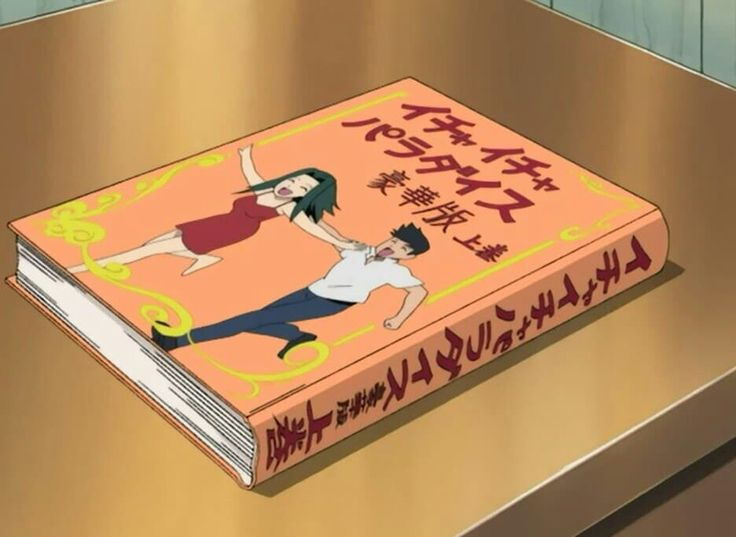
A Lenda de um ninja determinado
200 Ryos
um livro criado por Jiraya (nesse caso ele merece o crédito), não tem muito valor financeiro porém um enorme valor sentimental para todos.
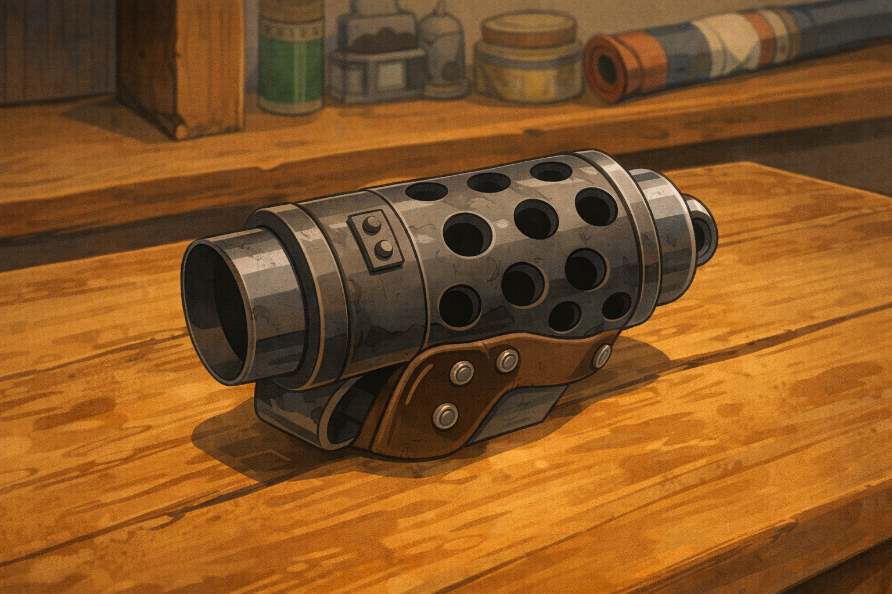
Alto-Falante Ressonante de Eco
250k ryos
Um item com buracos, pode ser equipado no braço direito do indivíduo e permite ao mesmo manipular ondas sonaras, podendo aprender jutsus que ao seu favor fazem o inimigo: ficar temporariamente cego (2 cenas), Tonto (fazendo todos os ataques do indivíduo pacíficos, lentos e fracos) e também pode ser usado para paralizia (requer 5k em genjutsu e o jutsu necessário para aplicar o genjutsu)
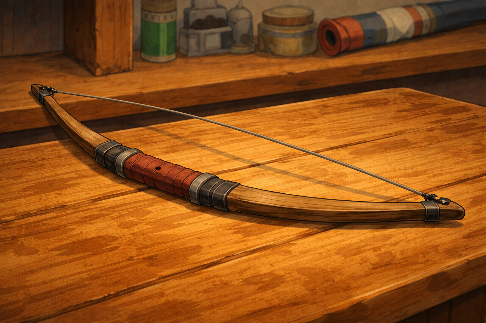
Arco Simples
1k Ryos (30 Ryos cada flecha)
Item utilizado para atirar flechas contra seus inimigos, item esse feito para aqueles que não são bons em combate corpo a corpo e possuem necessidade de manter a luta distante. Ainda bem útil para combates intermediários, podendo ser utilizado como um bastão. Não abuse da "Resistência", em última opção use em combate
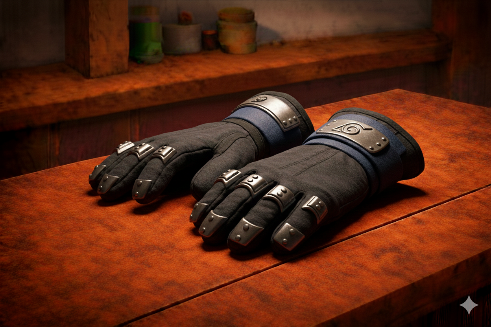
Luvas de Atrito de Vento
15.000 Ryos
Rank: B
Feitas de couro e micro-cerdas metálicas. Geram vácuo ao redor das mãos, permitindo mudar de direção no ar ou aumentar o alcance de socos com lâminas invisíveis. (+10% Vel/Agi)
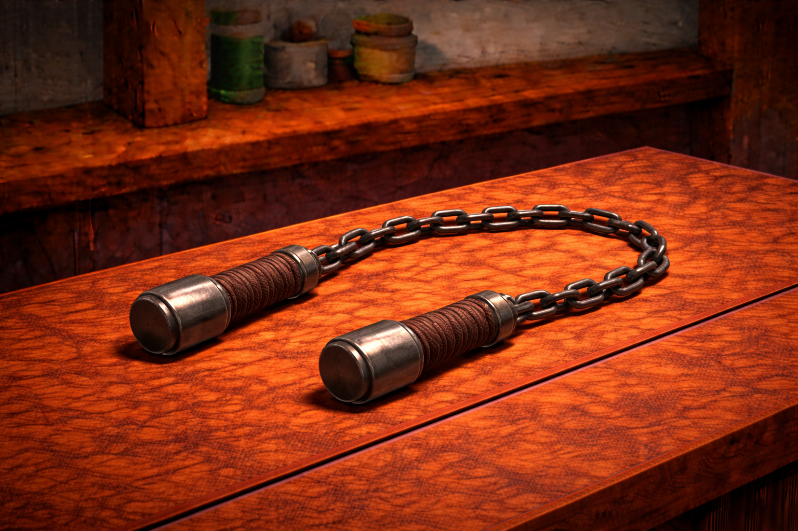
Aparador de Armas (Manriki-gusari)
1.500 Ryos
Rank: C
Uma corrente curta e resistente com pesos nas pontas, especializada em travar armas inimigas e imobilizar membros.
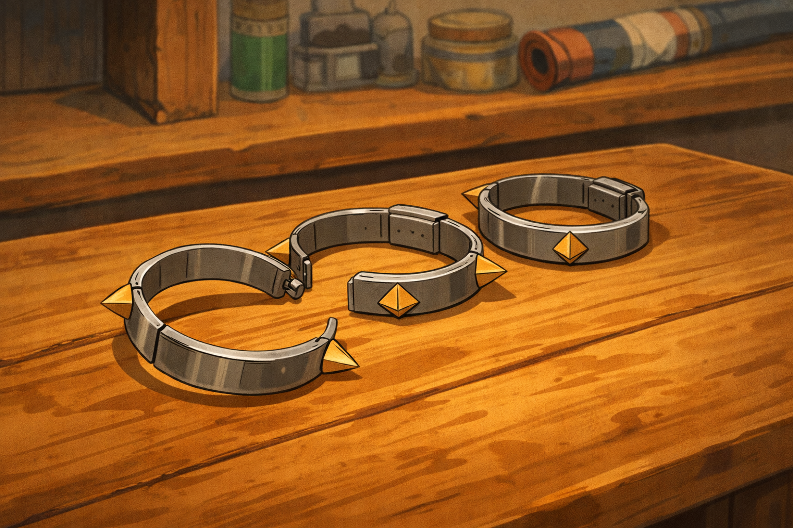
Argolas de Captura
200 Ryos cada
Argolas que após lançadas vão na direção desejada e antes do contato acontecer, ela se abre e fecha rapidamente, de forma que restringem o alvo
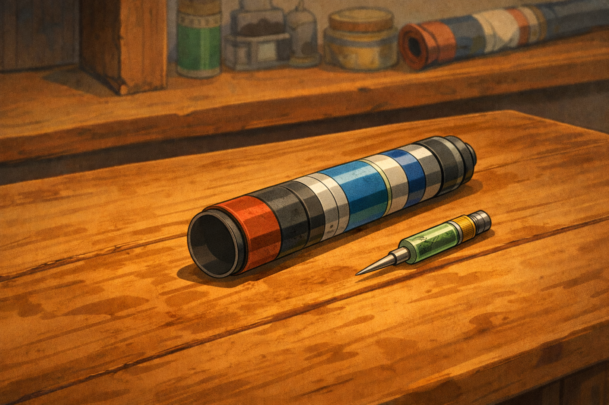
Atirador de dardos de injeção
1k Ryos (200 Ryos por dardo)
Item em forma de canudo, um pouco mais grosso que um canudo na verdade e tem aagrossura perfeito de um dardo ou injeção, facilitando e acelerando a chegada do dardo no inimigo
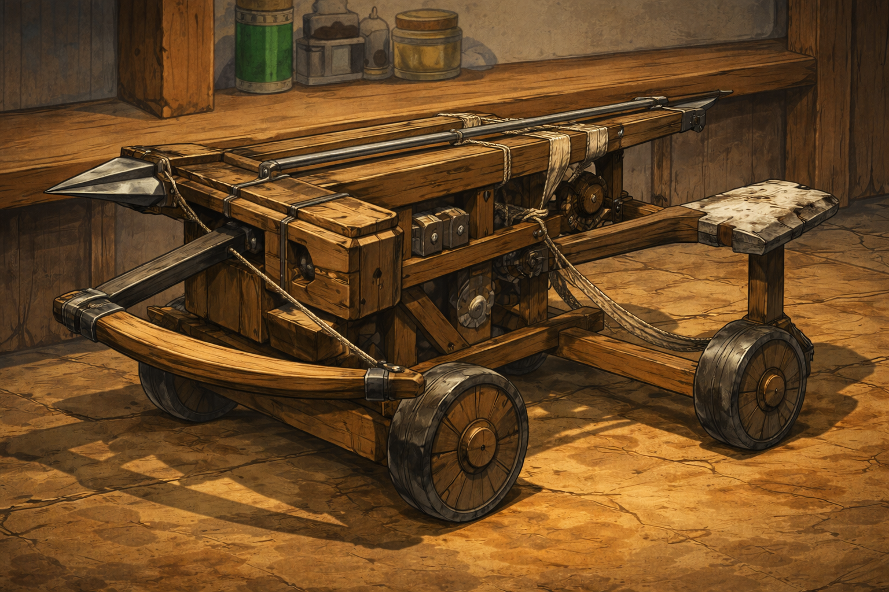
Balista
20k Ryos (100 Ryos por flecha)
balista é um lançador móvel de flechas maior que uma pessoa comum que é usado para acertar alvos a longa distância. (uma catapulta que lança flechas em vez de Pedras)
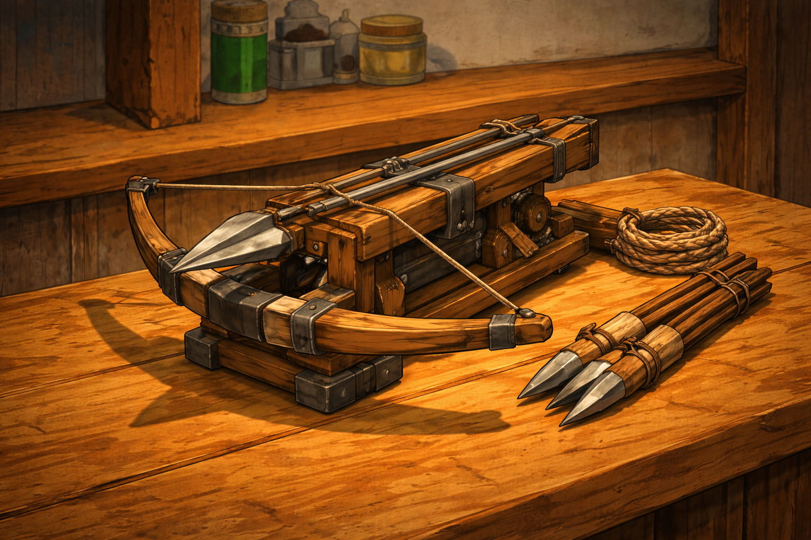
Besta (arma)
2k Ryos (50 por Flecha)
É uma arma com um arco de flechas adaptado a uma das extremidades de uma haste e acionado por um gatilho, o qual projeta virotes - dardos similares a flechas, porém mais curtos.
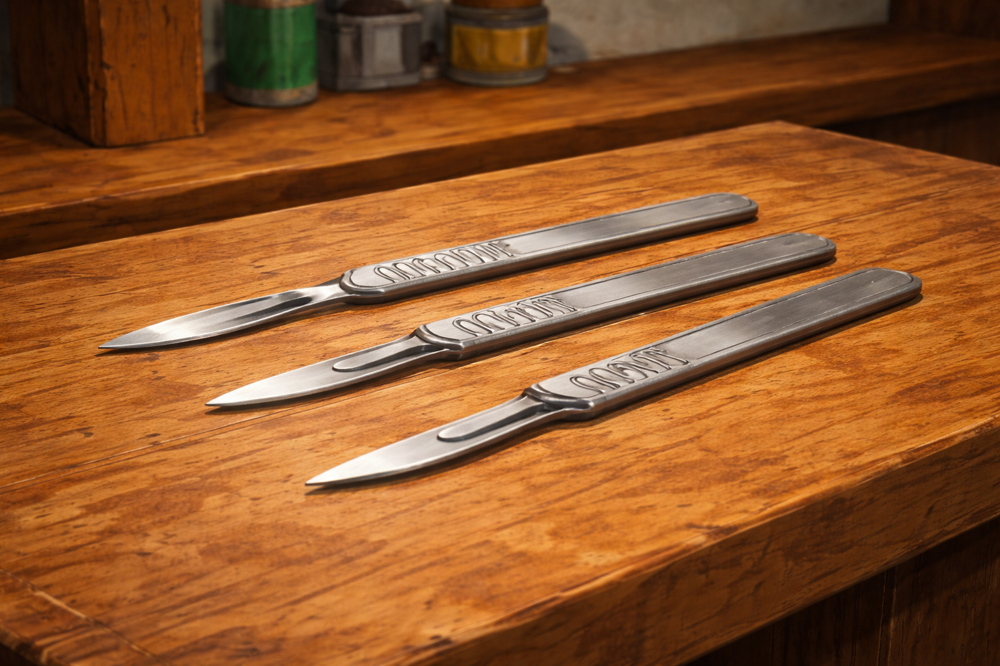
Bisturi
100 Ryos
Um bisturi é um pequeno instrumento de lâmina extremamente afiada destinada a cortar através da pele, tendões e músculos.
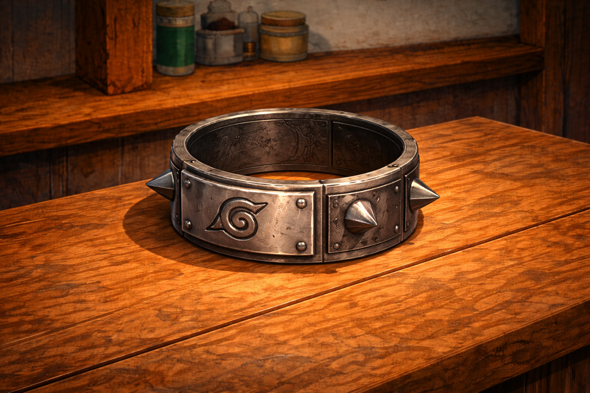
Braceletes de Ferro
200k cada
(necessário 10k em força e após obter os mesmos, o indivíduo receberá 10 pontos em força a cada 3 dias) Eles podem ser utilizados tanto como uma ferramenta de treinamento quanto como uma arma ofensiva.
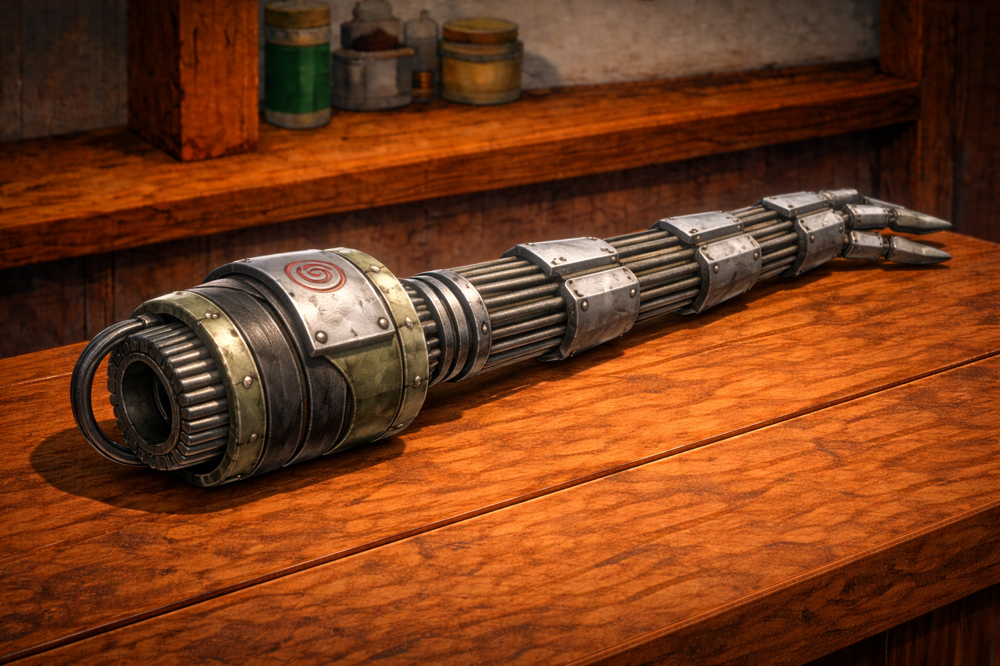
Braço de cabo retrátil
5k Ryos
Arma que permite que o usuário lance uma mão de metal que pode agarrar, arrastar e bater no inimigo.
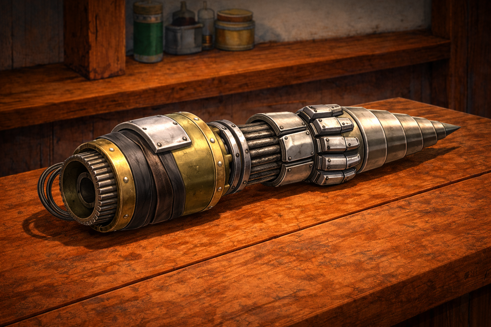
Braço de Broca
8k Ryos
Dispositivo de perfuração mecânica. Pode ser usado para escavar buracos e atacar o adversário inesperadamente.
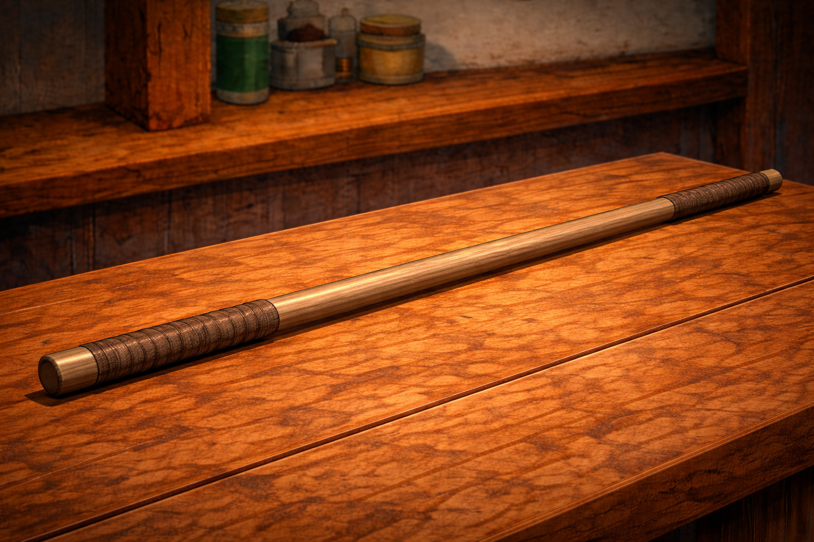
Bö
300 Ryos
Bastão simples, um cabo de madeira ou bambu reto, muitas vezes flexível.
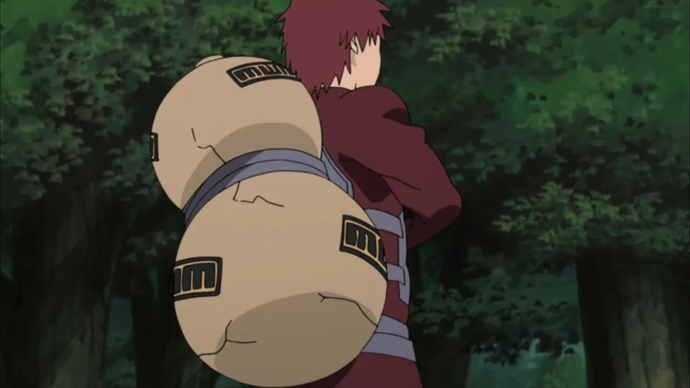
Cabaça de areia
500 Ryos
Bem útil para aqueles que manipulam areia, pode-se ser utilizada também como uma areia reserva.
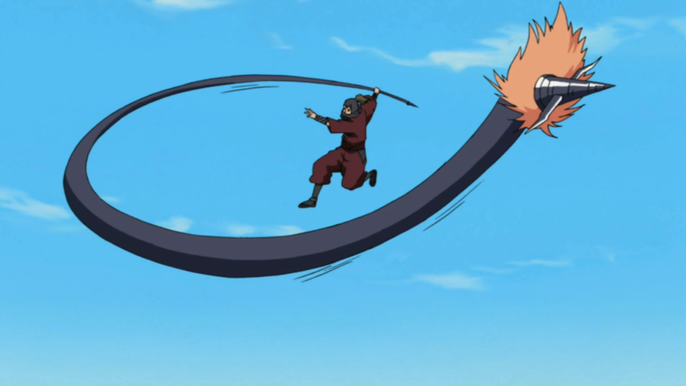
Daķö
300 Ryos
(Único) Uma lança em forma de cruz que se pode esticar-se, contrair-se e dobrar-se.
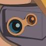
Escopo
2k Ryos
Dispositivo permite que ele veja seus alvos à distância e lhe permite encontrar o intervalo entre ele e outros objetos.

Escudo simples
200 Ryos
Muito útil para defender shurikens, kunais e dardos mas não jutsus elementais.

Katanas
1k Ryos
Um tipo de espada, Ótimas para realizar cortes rápidos e precisos.
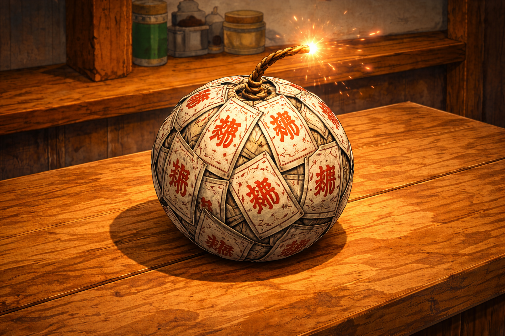
Bola de papéis bombas
500 Ryos cada
Esta é simplesmente uma porção de papéis explosivos envoltos em uma bola e usado da mesma maneira que uma bala de canhão com um efeito explosivo. Eles são disparados a partir de canhões e são capazes de causar grandes danos. Também é usado como minas submarinas.
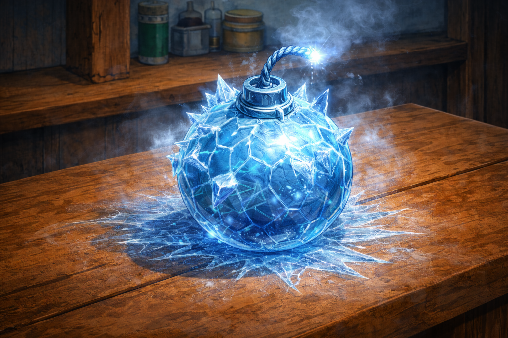
Bomba de gelo
600 Ryos cada
Estas bombas são esferas cristalinas e azuis que quando detonadas, lançam uma torrente de espinhos de gelo.

Bomba de luz
100 Ryos cada
Bombas de Luz (光玉, Hikaridama) são usadas para diversas coisas, criando uma luz ofuscante quando detonada.
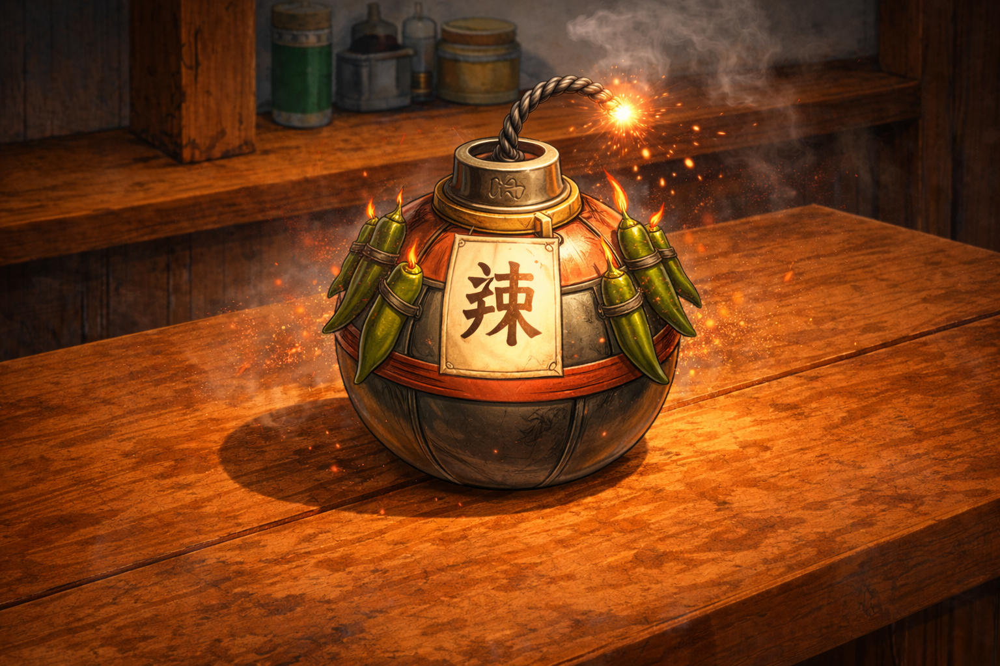
Bomba de pimenta
400 Ryos cada
Estes são os itens usados pelos aldeões da Vila da Árvore Genjutsu para repelir o genjutsu causada pela floresta circundante. Como a área é cercada por árvores que naturalmente lançam genjutsu nos moradores, por isso criaram estas bombas, a fim de ajudá-los a quebrar a técnica. Ela também é capaz de quebrar genjutsu feito pelas pessoas, em contato com os olhos, o gás tira a pessoa do genjutsu, porém, faz os olhos arderem
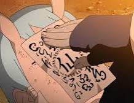
Brahma
1B Ryos
Inicialmente, o usuário coloca o selo sobre o local do ferimento e espera alguns segundos. Depois disto, o selo começa a se ativar sozinho, liberando uma luz verde fluorescente muito intensa. No mesmo momento em que a luz é liberada, o ferimento é curado instantaneamente. Após a luz cessar, o ferimento é curado ou o utilizador recebe sua vitalidade novamente.
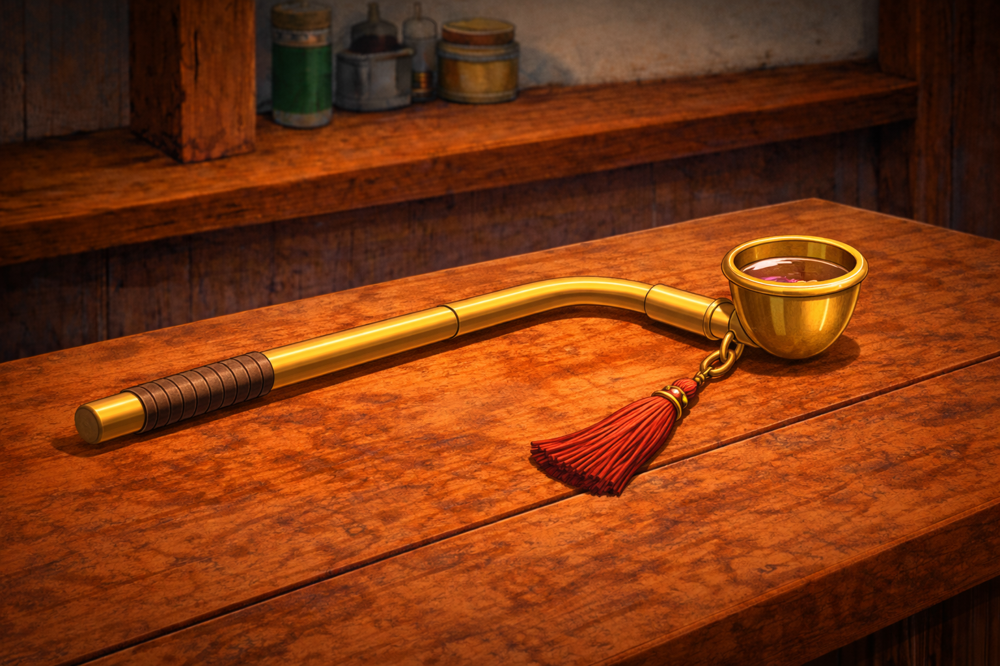
Cachimbo de Bolhas
3k Ryos
O soprador de bolhas foi utilizado por Utakata para que ele executasse seu Ninjutsu de Bolha de Sabão. Era dourado em sua cor, dobrado no meio e tinha um pendão anexado. O soprador podia criar bolhas para muitas finalidades e também poderia ser usado como uma arma branca, já mostrado como muito resistente, sendo capaz de bloquear uma kunai sem nenhum dano sofrido aparente. Com Utakata sendo o usuário, o soprador melhorava e ajudava na manipulação das técnicas do Saiken.
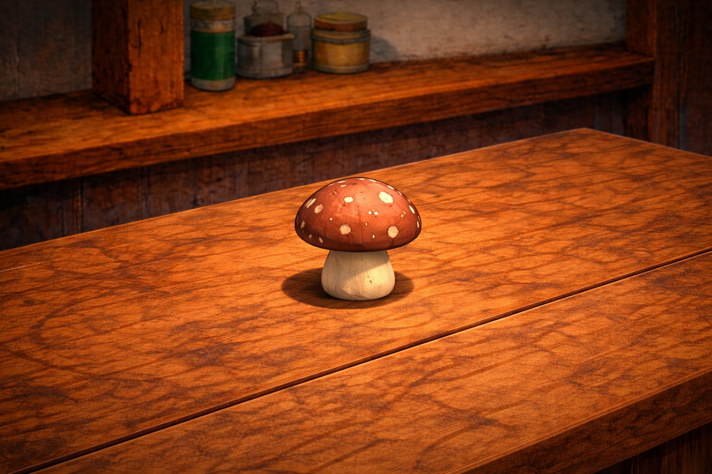
Cogumelo de moldagem
50 Ryos cada
O Cogumelo de Modelagem (黴びる茸, Kabirudake) é um tipo de cogumelo que se multiplica quando deixado em uma razão. A Gangue da Rota do Silêncio vendeu o cogumelo em sua forma inicial para Naruto, para que o cogumelo infectasse o navio. No primeiro momento, ele se parece com um cogumelo pequeno comum, mas após uma noite, ele libera seus esporos, fazendo com que os cogumelos se multipliquem e, ficando com várias cores. Quando uma pessoa come os cogumelos, ela fica com cara roxa, e os cogumelos se espalham pelo seu corpo. Alguns cogumelos sugam chakra, como o Yamato. Quando as pessoas comem, elas ficam inconscientes sobre suas ações, como aconteceu com Naruto e Guy. Após o efeito dos cogumelos terem desaparecido, Naruto e Guy tiveram amnésia.
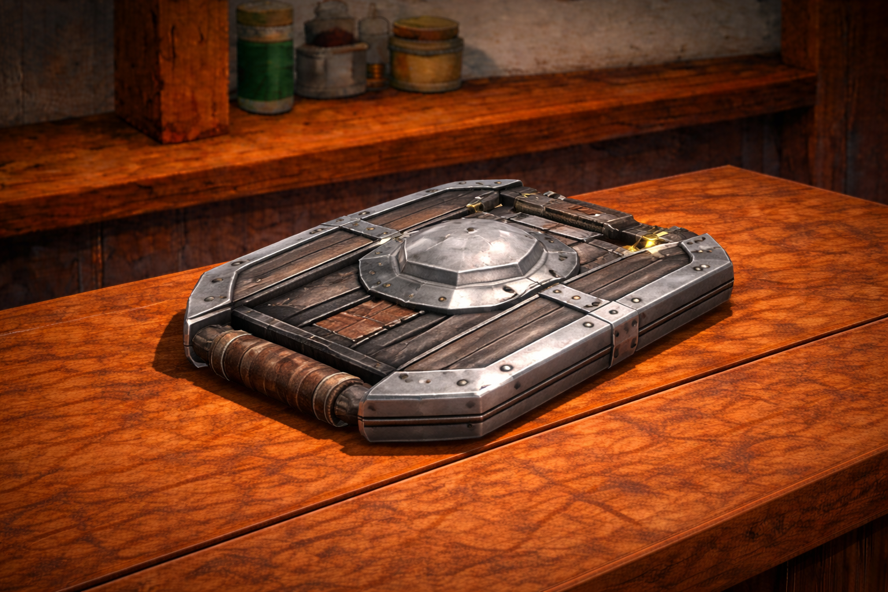
Escudo Retrátil
15k Ryos
Fechado, parece uma pulseira. Uma vez aberto, pode repelir todos os tipos de armas convencionais, tais como kunai ou shuriken.
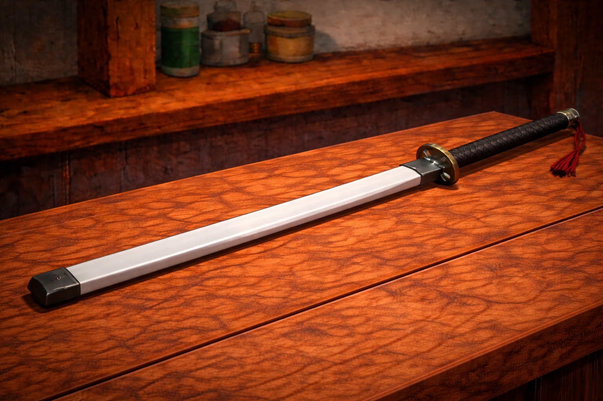
Kusanagi Sasuke
250k Ryos
Esta não tem os mesmos recursos da de Orochimari mas consegue transmitir o chidori sobre sua lâmina, sendo capaz de cortar tudo que toca, até mesmo aço.
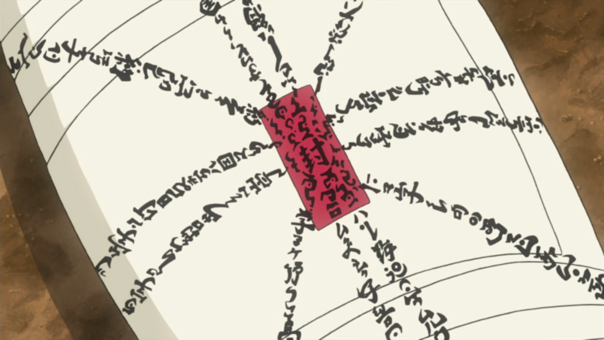
Etiqueta de selamento
3k Ryos
Ao colocar uma etiqueta de selamento sobre um oponente ou objeto, um selo substancial é gerado que impede que o artigo em questão seja invocado, com o contato a etiqueta original permanece intacta.
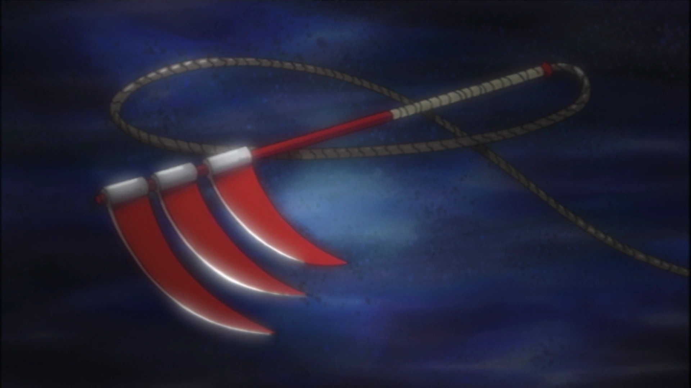
Foice de lâmina tripla (retrátil)
5k Ryos
Uma foice com três lâminas, o cabo desta pode se esticar e voltar ao normal por meio de um cabo de aço, ligado ao braço do usuário e ao cabo
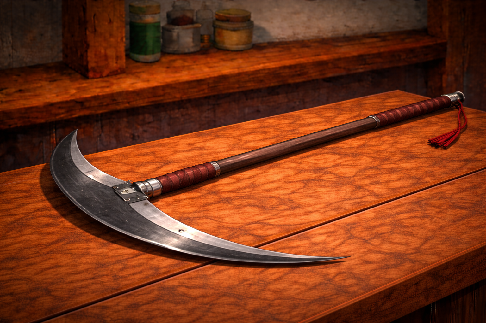
Foice
1k Ryos
Uma foice comum, um cabo longo com uma lâmina curva na ponta.
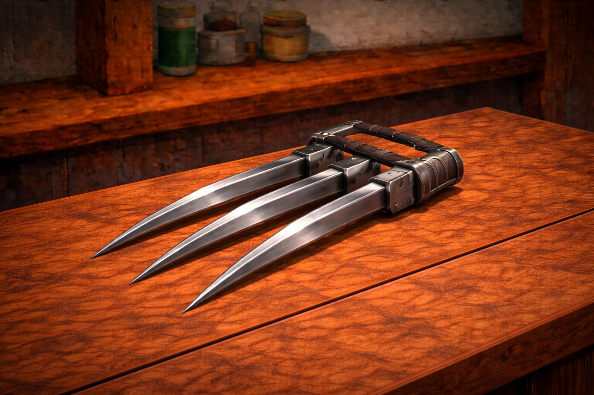
Garra
2k Ryos
Ultra resistente, semelhante ao modelo da do Wolverine porém, se equipa segurando uma espécie de soco inglês que é ligada a mesma.
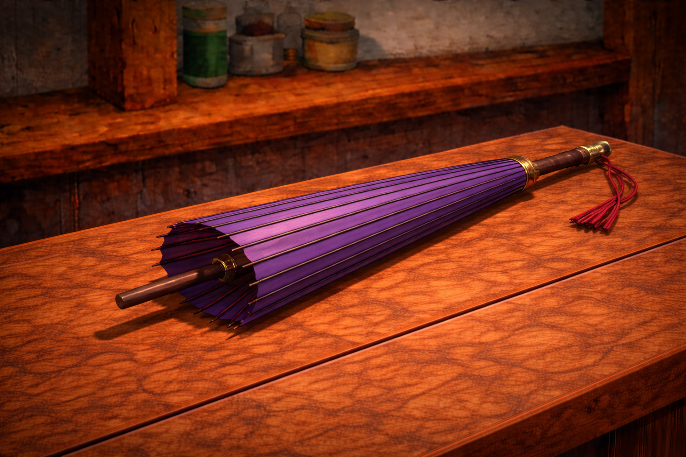
Guarda-Chuva
500 Ryos
Pode ser usado como escudo e para atrasar quedas, também atirar dardos pela ponta.
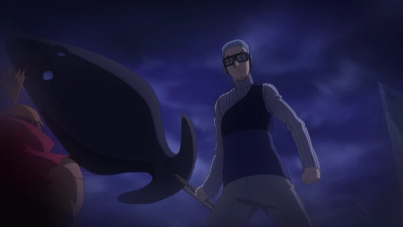
Himarekarei
300k Ryos
Os dois buracos na ponta da lâmina são capazes de emitir chakra, que pode aparentemente ser usado para formar várias armas incluindo um martelo ou uma longa espada. O tamanho da arma resultante parece depender da quantidade de chakra armazenado, o que significa que quanto mais chakra maior irá ficar a arma. No entanto, independentemente das dimensões da arma a emissão de chakra ocorrerá em uma velocidade espantosa.
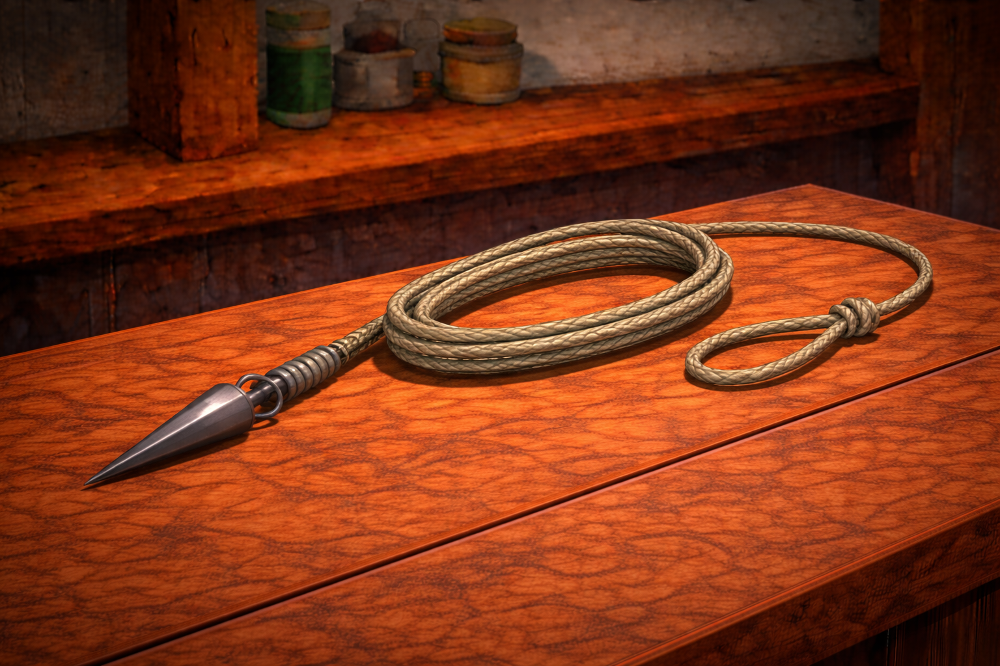
Jöryö
20 Ryos
O Jōhyō se consiste de uma longa corda, normalmente possui vários metros de comprimento, com uma alça presa a um fim, e um ferrão de metal ligado a outro, agindo como um peso que permite ao usuário para lançar o dardo para fora em um alvo de longo alcance para vinculá-las em seguida, bobina-los ou realizar um ataque contra eles.
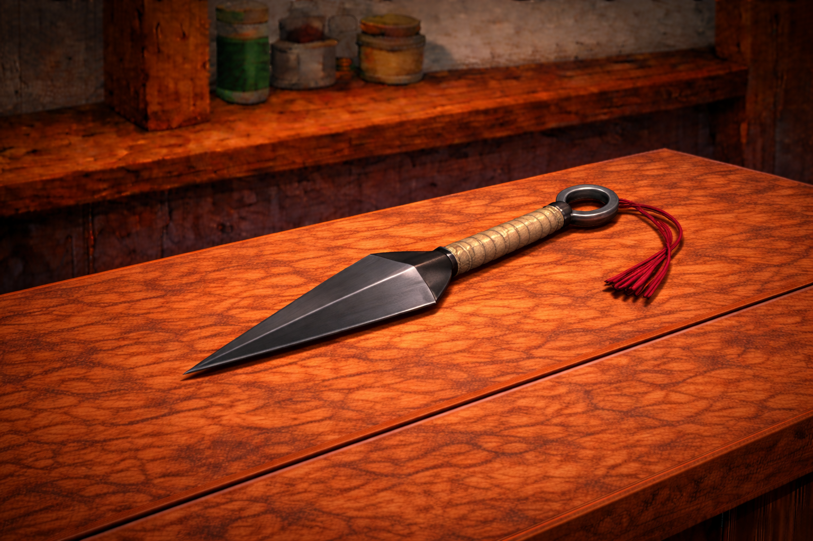
Kunai
10 Ryos
A Kunai assim como a shuriken, é uma das ferramentas mais utilizadas na série Naruto. É uma espécie de Adaga negra com o objetivo de pressionar e esfaquear, pode também causar danos ao ser lançada, apesar de não ser esse o seu objetivo. O seu tamanho é semelhante ao tamanho de uma mão.
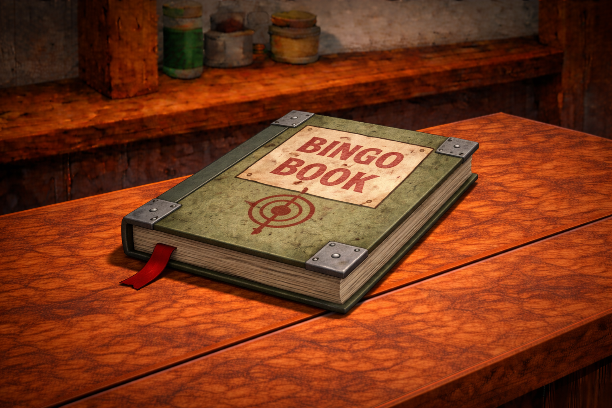
Livro Bingo
20k Ryos
Os Livros Bingo são livros pretos usados por shinobi, cuja contêm toda e qualquer informação sobre a Lista Negra Shinobi e de seus alvos. Há várias versões dos Livros Bingo, sendo as mais comuns as que se baseiam das Aldeias Ocultas.
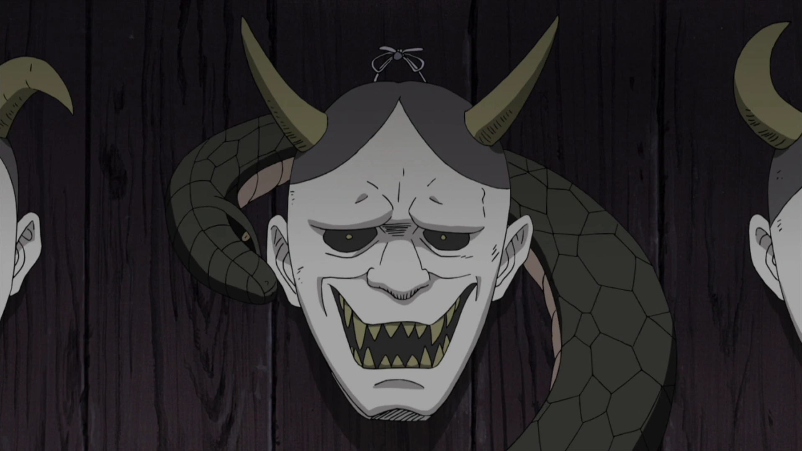
Máscara Shinigami
300k Ryos
Uma máscara que se assemelha a face do Shinigami, que residia em uma parede dentro do Templo Armazenador de Máscara do Clã Uzumaki localizado na periferia de Konohagakure, juntamente com outras 26 máscaras parecidas. Ela permite que o usuário invoque o Shinigami por possuir o corpo do usuário. Isso permite que o usuário execute o Selo Consumidor do Demônio Morto: Liberar.
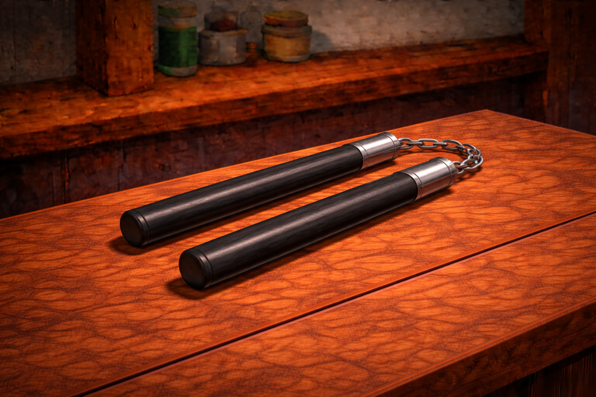
Nunchaku
250 Ryos
Arma branca que consiste em uma corrente e em suas duas pontas uma espécie de bastão curto.
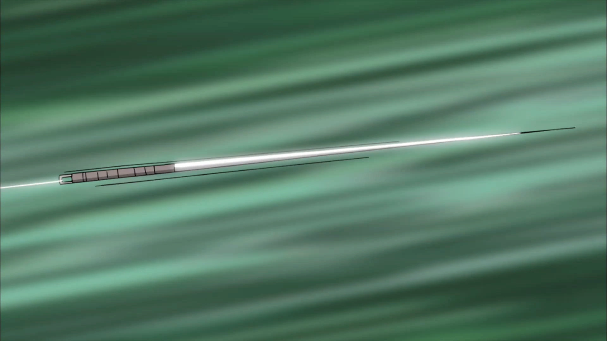
Nuibari
300k Ryos
(縫い針; "Agulha Costuradora") é uma das espadas dos Sete Espadachins da Névoa, empunhada especialmente por Kushimaru Kuriarare. A própria lâmina assume a forma de uma estreita "Espada Longa" (長刀, chōtō) que muito se assemelha a uma grande agulha, com um comprido fio de aço extremamente fino localizado na base do seu punho. Esta espada é dita possuir a capacidade de furar tudo e unir, demonstrado por meio de sua capacidade de penetrar facilmente alvos múltiplos em um único golpe e depois literalmente ponteá-los simplesmente usando o fio. Um usuário capaz pode até mesmo jogar a espada com a intenção de perfurar vários inimigos antes de pegar a agulha no outro lado e repetir o processo em diferentes ângulos, a fim de criar pontos de cadáveres com o fio passando por tudo, efetivamente criando fileiras de corpos em vários pontos ao longo do comprimento do fio.
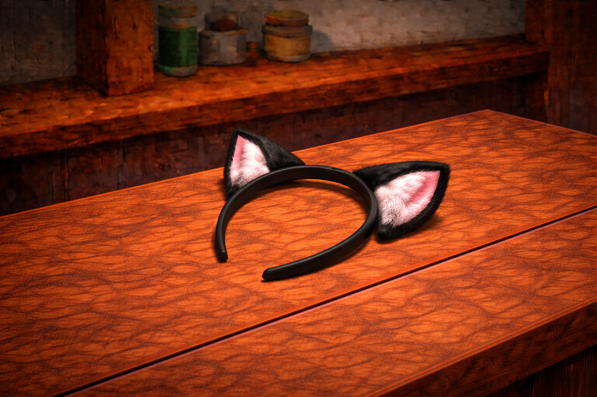
Orelhas de Gato
20 Ryos
Esta ferramenta foi dada a Naruto, Sasuke, Sakura e para esgueirarem-se para a Fortaleza de Gato de Nekomata. Essas ferramentas exclusivas permitem que o usuário interaja com outros gatos como se fossem gatos em si, mas se as orelhas caíssem, eles iriam voltar a ser distinguíveis de gatos.
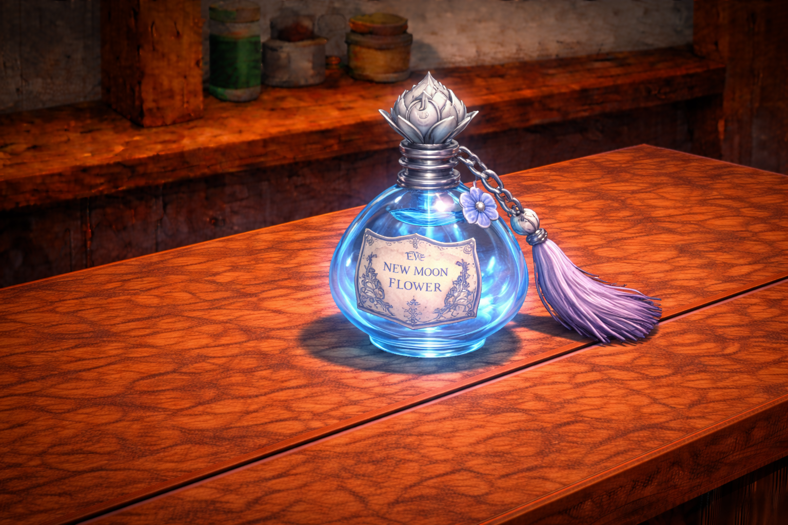
Perfume Da Flor Da Lua Nova
30k Ryos
Este perfume dissipa genjutsu e hipnose. Naruto usou esse perfume em Tsukino para dissipar o Jibakugan dela.
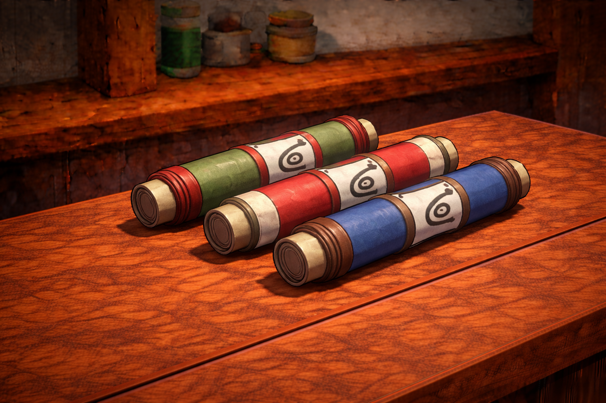
Pergaminhos
30 Ryos cada
O pergaminho também pode ser usado por ninjas para invocar criaturas, pessoas ou itens para seu auxílio, tornando o transporte desses elementos mais fácil, provendo mais opções em uma missão. Algumas técnicas podem também ser armazenadas neles.

Pergaminho da lua vermelha
Restrito
O Pergaminho da Lua Vermelha é um pergaminho especial que pode acabar com o Mundo do Genjutsu
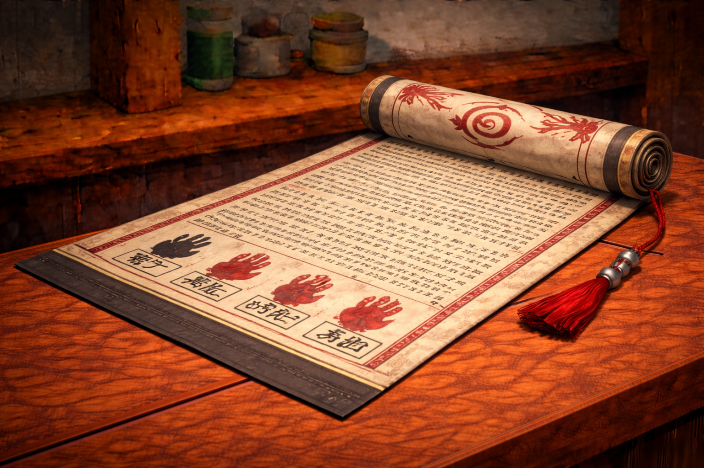
Pergaminho de contrato
10k Ryos
Quantos mais tiver, mais invocações poderá ter. O limite para quem não tem nenhum é 3.
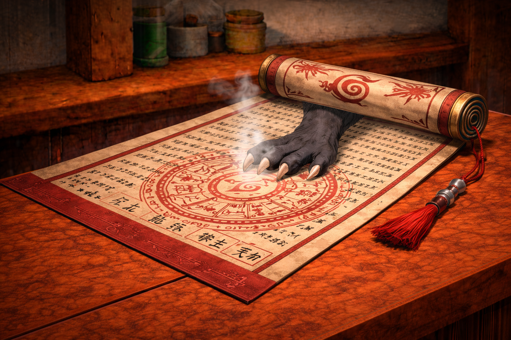
Pergaminho de invocação
300 Ryos cada
Trata-se de um pergaminho com uma fórmula de invocação pré-gravada em seu interior, permitindo que seu portador invoque o ser associado à formula, como animais ou até mesmo clones das sombras. A invocação de animais normalmente exige o uso do sangue usado no contrato, mas caso o invocador não tenha estabelecido o contrato, ele pode utilizar o sangue de alguém que já o fez.
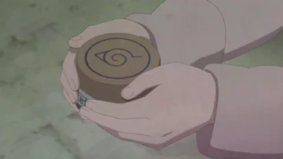
Pomada secreta do clã Hyuga
0 Ryos Hyugas, 200 Ryos 1 uso os demais clãs
Uma pomada feita por Hyugas que cura e cicatriza quase que instantaneamente as feridas.
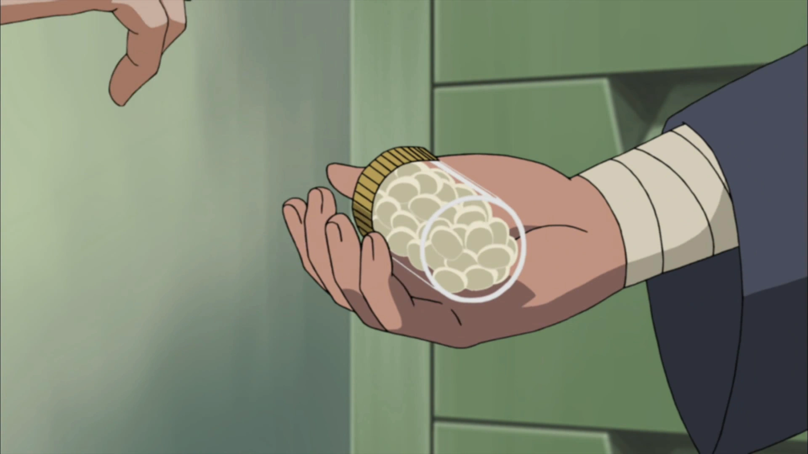
Pílulas de genjutsu
900 Ryos cada
Essas pílulas especiais foram desenvolvidas por Orochimaru. Uma vez ingeridas, as pílulas irão lançar um genjutsu sobre o alvo que paralisa o corpo. As drogas também afetam a mente do alvo, até certo ponto, como Gyūki teve problemas para se lembrar de seu último tumulto após Blue B tomar as pílulas.
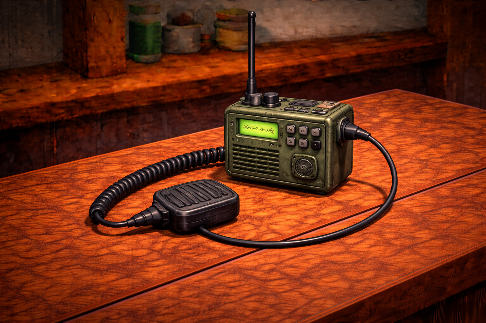
Rádio
400 Ryos cada
São como fones de ouvidos que permitem se comunicar com outros usuários que estejam na mesma frequência.
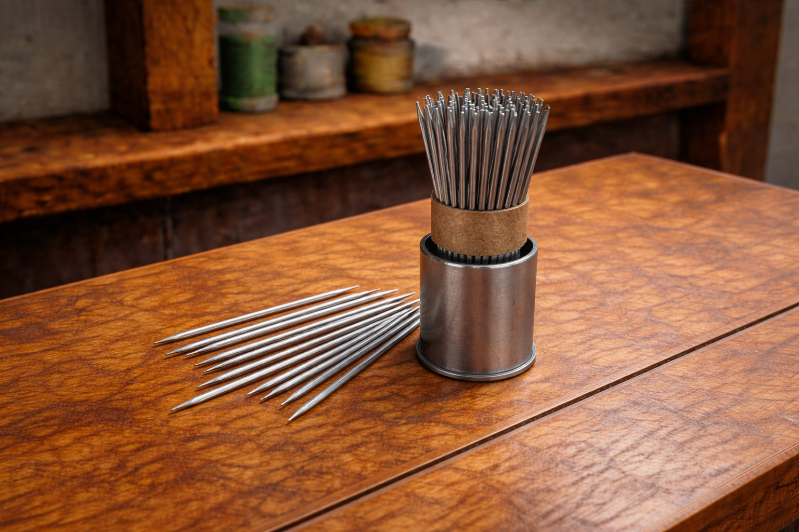
Senbon
30 Ryos cada
Pequenas agulhas.
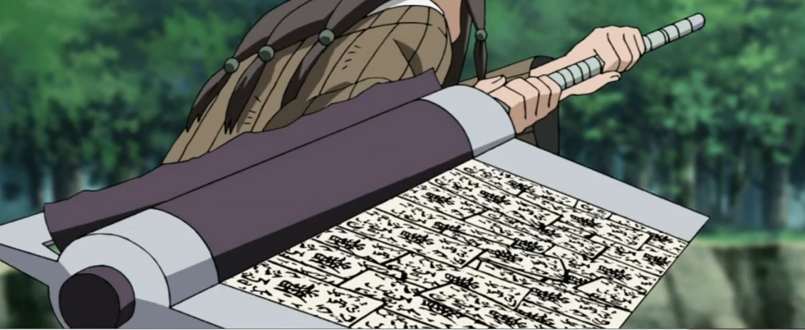
Shibuki
600k Ryos
A Shibuki (飛沫; "Respingo") é uma das espadas dos Sete Espadachins Ninja da Névoa, empunhada por Jinpachi Munashi. A lâmina utiliza vários papéis explosivos, contidos dentro de um deslocamento substancial de modo que incorpora explosões junto ao Kenjutsu do usuário, ganhando o título de "Espada Explosiva" (爆刀, bakutō).
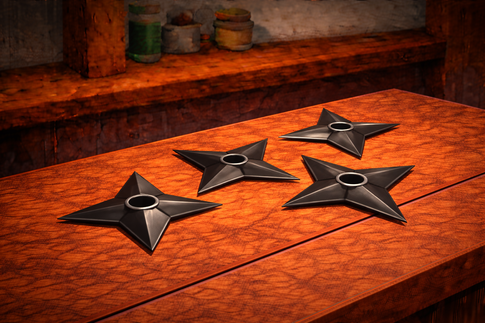
Shuriken
10 Ryos cada
Shuriken (手裏剣), assim como a kunai, é uma das armas mais básicas vistas na série Naruto. Elas são estrelas afiadas com quatro pontas de metal, úteis para jogar. Elas também podem ser utilizadas para o combate próximo, mas não são muito eficientes. Embora pequena, ela pode ser usada para distrair, prender o inimigo no solo, ou, precisando o suficiente, pode matar ou incapacitar um inimigo. Ela tem um círculo aberto no centro, útil para agarrar com um dedo, para evitar o corte de si mesmo, ou para colocá-la através de um fio. O círculo também é benéfico para a aerodinâmica total da arma, garantindo trajetórias mais precisas.
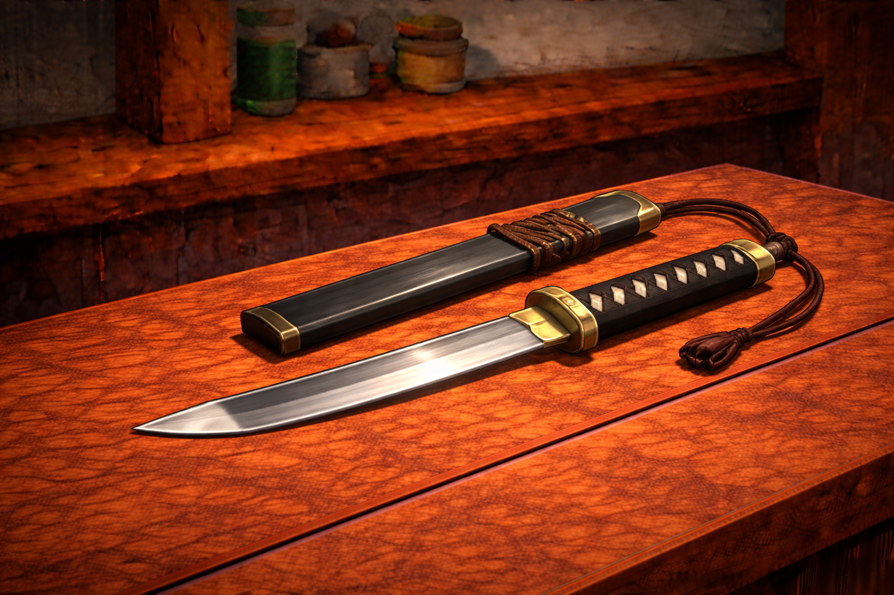
Tantö
700 Ryos
A Tantō é simplesmente uma pequena katana.
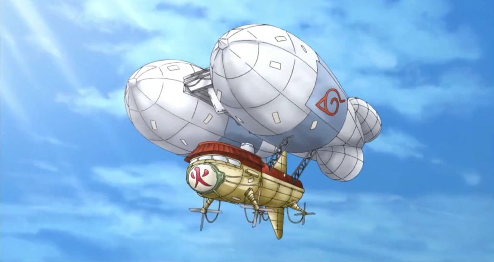
Tobishachimaru
300k Ryos
O Tobishachimaru (飛鯱丸, Tobishachimaru) é um navio voador projetado por Tazuna e criado pelos carpinteiros do País das Ondas. Esperava-se que ele fosse o primeiro de uma frota de navios voadores, o que iria revolucionar o transporte de mercadorias entre os países. Batizado com o nome orca, o Tobishachimaru tem 223 metros de comprimento, 34 metros de diâmetro, tem uma velocidade máxima de 70 km/h, e destina-se a voar a uma altitude de 5.000 metros. Ele usa balões cheios de hélio para flutuação e seis hélices para o movimento e direção. Além da carga e da tripulação, ele pode acomodar cerca de sessenta passageiros, em cujo benefício o Tobishachimaru é equipado com uma cozinha, compartimento de jantar, e outras amenidades.
Veneno
2k Ryos
Um frasco com 1 dose para desmaiar o alvo.
Veneno de Sasori
5k Ryos
Um frasco com dose para matar uma pessoa.
💎 ITENS LENDÁRIOS
Benihisago
5B Ryos
(Arma lendária, req 30k Ninjutsu). Pode selar pessoas. Se o alvo disser a palavra que mais falou na vida ou ficar quieto, é absorvido.
Espadas Kiba (Gêmeas do Trovão)
1.500.000.000 Ryos
Rank: S (Lendário) iten unico
Armas lendárias imbuídas com eletricidade pura. Permitem invocar raios do céu e possuem o corte mais afiado entre as espadas.
Lâminas de Trincheira (Asuma)(item unico)
50.000 Ryos
Rank: B
Soco-inglês com lâminas de metal condutor. Permitem que o chakra elemental "estique" a lâmina, aumentando drasticamente o alcance e o corte.
Bashösen
5B Ryos
(Arma lendária, req 30k ninjutsu). Leque capaz de gerar todas as cinco naturezas de chakra elementais básicas.
Gunbai
500k Ryos (250k Uchihas)
Reflete ataques instantâneamente e cria rajadas de vento que lançam vários inimigos longe.
Kusanagi Orochi
900k Ryos
Corta tudo que toca, exceto manto de jinchurikes. Pode ser controlada telepaticamente.
💊 CONSUMÍVEIS E UTILITÁRIOS
Bomba de fumaça
100 Ryos cada
Pequenas esferas que liberam uma cortina de fumaça para cegar oponentes.
Pílulas de ração militar
1,500 Ryos cada
Reabastecem o chakra e permitem lutar por três dias e três noites sem descanso.
Máscara de Filtro
12.000 Ryos
Rank: C (Sugestão)
Equipamento facial com tanques de processamento químico. Permite respirar debaixo d'água (10 min) ou em ambientes com gases tóxicos baixos.
Fios de Aço Reforçados
500 Ryos (Rolo)
Rank: D
Fios quase invisíveis e extremamente resistentes. Usados para guiar projéteis, criar armadilhas de contenção ou conduzir chakra.
Papel Bomba (Kibaku Fuda)
500 Ryos (un)
Rank: D
Tags de papel seladas com energia explosiva. Podem ser coladas em armas ou superfícies para detonação tática.
Dardos Inibidores de Chakra
2.000 Ryos (un)
Rank: B
Senbons tratadas com toxina que obstrui os tenketsus. Dificulta a moldagem de jutsus por 3 turnos se atingir o tronco.

Pílula de Despertar (Seishingu)
50.000 Ryos
Rank: A
Droga perigosa que libera limites físicos extremos. Causa coma profundo após o término dos efeitos.
Manto de Invisibilidade (Kakuremino)
800 Ryos
Rank: E
Tecido de estampa camuflada adaptável para misturar o usuário a superfícies estáticas como paredes ou pedras.
Papel Sensor de Perímetro
300 Ryos (Pack c/ 5)
Rank: C
Tags que detectam chakra hostil. Queimam sozinhas caso alguém cruze a barreira onde foram coladas.
Pergaminho de Invocação de Água
4.000 Ryos
Rank: C
Pergaminho selado com uma grande massa de água. Útil para usuários de Suiton em terrenos áridos ou desertos.
Pote de Insetos Kikaichu
10.000 Ryos
Rank: C (Exclusivo)
Recipiente para procriação e transporte dos insetos parasitas que devoram chakra. Exclusivo para Aburames ou domadores.
Água do Herói
300k Ryos
Aumento de dez vezes no nível de chakra, força e Ninjutsu temporariamente.
⚡ PROMOÇÃO RELÂMPAGO ⚡
⚠️ Ofertas por tempo limitado ou até durar o estoque!
📦 Kit Recruta Ninja
De: 2.500 Ryos
Por: 1.000 Ryos
Ideal para novos gennins:
• 10 Kunais | 20 Shurikens
• 02 Bombas de Fumaça
• 01 Esfera de Supressão de Odor
• 01 Pergaminho | 04 Papéis Bomba
👤 Kit Emboscada Silenciosa
De: 3.600 Ryos
Por: 2.500 Ryos
Para missões de infiltração:
• 01 Manto de Invisibilidade
• 10m de Fios de Aço Reforçados
• 02 Papéis Sensores de Perímetro
• 02 Bombas de Fumaça
💀 Kit Poder Proibido
De: 65.000 Ryos
Por: 52.000 Ryos
Poder extremo com alto risco:
• 01 Pílula de Despertar (Seishingu)
• 01 Adaga Tantō Profissional
• 01 Pergaminho de Contrato
🌪️ Kit Mestre dos Ventos
De: 18.000 Ryos
Por: 14.500 Ryos
Foco em combate aéreo e esquiva:
• 01 Par de Luvas de Atrito de Vento
• 05 metros de Fios de Aço
• 02 Esferas de Supressão de Odor
🌵 Kit Sobrevivência no Deserto
De: 11.500 Ryos
Por: 8.900 Ryos
Para ninjas de água em solo seco:
• 02 Pergaminhos de Invocação de Água
• 01 Máscara de Filtro (Respirador)
• 01 Cantil Ninja de Alta Capacidade
🛡️ Kit Tático de Fronteira
De: 5.000 Ryos
Por: 3.500 Ryos
Mantenha o inimigo longe:
• 05 Papéis Sensores de Perímetro
• 10 Papéis Bomba
• 01 Aparador de Armas (Manriki-gusari)
💉 Kit Médico de Assalto
De: 15.000 Ryos
Por: 11.000 Ryos
Cure aliados e neutralize inimigos:
• 04 Dardos Inibidores de Chakra
• 01 Kit de Primeiros Socorros Avançado
• 02 Máscaras de Filtro Antigás
⚔️ Lâminas de Trincheira
De: 50.000 Ryos
Por: 45.000 Ryos
Aproveite o preço reduzido na arma clássica do Time 10! Ideal para focar chakra elemental e expandir seu alcance de corte.
🎭 Máscara de Filtro
De: 12.000 Ryos
Por: 7.200 Ryos
Não seja pego por gases venenosos ou falta de ar em missões subaquáticas. Equipamento essencial para infiltração nesta semana!
🐜 Pote de Insetos Kikaichu
De: 10.000 Ryos
Por: 6.500 Ryos
Promoção especial para membros do Clã Aburame ou especialistas em dominação. Aumente seu enxame gastando muito menos.
🎯 Dardos Inibidores (Pack c/ 3)
De: 6.000 Ryos
Por: 4.000 Ryos
Leve 3 dardos pelo preço de 2! A chance perfeita para neutralizar os jutsus dos seus oponentes com precisão cirúrgica.